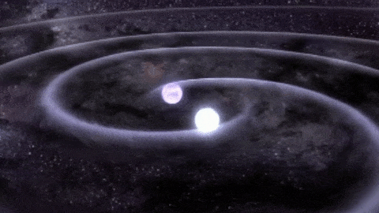

5 Facts About Gravitational Waves

- Gravitational waves are ripples in space-time caused by accelerating massive objects.
- The first direct detection of gravitational waves occurred in September 2015 by LIGO.
- Gravitational waves carry crucial information about cosmic events like black hole mergers.
- The effect of gravitational waves on Earth is extremely small, often less than 1 part in 10^21.
- Gravitational wave astronomy is a new field that helps study phenomena like dark matter and the early universe.